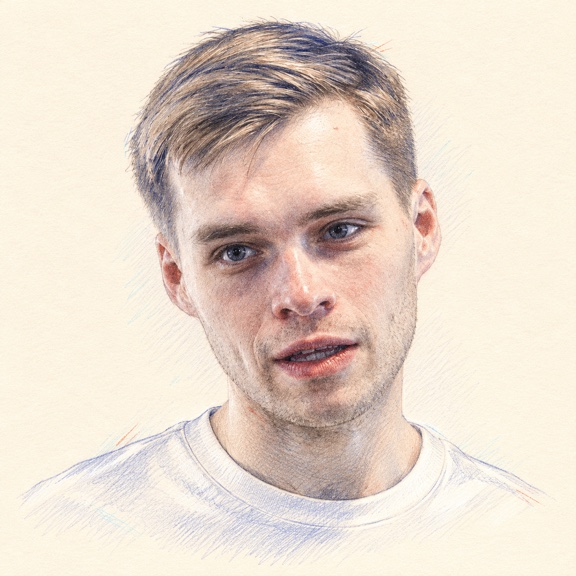

Data scientist
Aleksei Ardashev
I study product behavior, on-chain activity, and fraud. I’m interested in simulation models for risk.
Projects
Loading projects…

Data scientist
I study product behavior, on-chain activity, and fraud. I’m interested in simulation models for risk.
Loading projects…